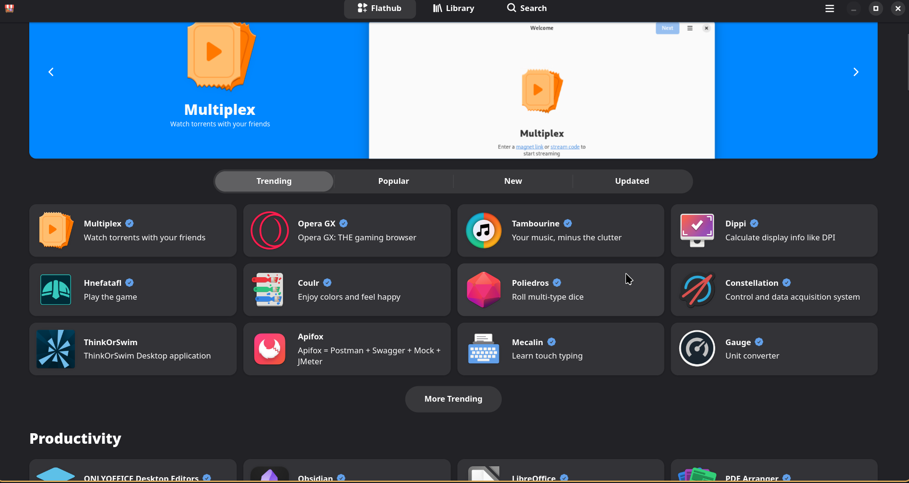

为什要使用 Flatpak 🤔
在 Linux 下装软件，除了系统包管理器（apt/pacman/dnf）和 Snap，还有越来越流行的 Flatpak。它解决了依赖冲突和发行版碎片化的问题 🎉
| 优点 | 解释 |
|---|---|
| 跨发行版兼容 🌍 | 同一个 Flatpak 应用可以在不同的 Linux 发行版上运行 |
| 沙盒安全 🔒 | 应用运行在受限的环境中，增强系统安全性 |
| 依赖隔离 📦 | 应用自带所需依赖，避免与系统库冲突 |
| 版本控制 🔄 | 支持并行安装同一应用的不同版本 |
无论你是寻找应用的用户，还是希望触达更多用户的开发者，Flathub 都是 Linux 应用的最佳选择 ✨
安装 Flatpak 🛠️
Flatpak 支持几乎所有 Linux 发行版，安装请参考官网：
https://flatpak.org/setup/
这里是 Arch Linux 的安装方法 🐧
# 安装 flatpak
sudo pacman -S flatpak
# 安装完后… 其实不用重启，重新登录终端即可 😉
# 如果你非要保险，也可以 reboot（但没必要）
添加 Flatpak 的软件仓库 Flathub 📂
Flathub 是最大的 Flatpak 应用中心 🎯
# 添加官方镜像
flatpak remote-add --if-not-exists --user flathub https://dl.flathub.org/repo/flathub.flatpakrepo
# 验证远程仓库
flatpak remotes
对于国内网络限制导致下载速度的问题 🚦，如果没有魔法，可尝试更换为国内镜像。
这里推荐 中科大镜像 🇨🇳
# 添加国内镜像源
flatpak remote-modify flathub --url=https://mirrors.ustc.edu.cn/flathub
# 如果想恢复官方源
flatpak remote-modify flathub --url=https://dl.flathub.org/repo
图像化 GUI 商店 🖼️
如果不想安装软件，可以直接去 flatpak 官网🔗查找应用
https://flathub.org/
GNOME Software / KDE Discover：默认集成 Flatpak 支持，安装后即可在 GUI 中搜索安装 🎨
如果你用窗口管理器（比如 i3、awesome、dwm，niri，hyprland），这里推荐 Bazzar 🛒
flatpak install flathub io.github.kolunmi.Bazaar
flatpak run io.github.kolunmi.Bazaar
下载好后，就可以打开开始用了！ 🚀

基础命令行 CLI 使用方法 💻
如果你是一个喜欢命令行工作但人，可以学习这些😉。
# 查看 flatpak 版本 🧐
flatpak --version
# 搜索应用程序 🔍
flatpak search 应用名
# 安装应用 📥
flatpak install applicationID # 记得前面加上仓库名，比如 flathub
# 列出已安装应用 📋
flatpak list # 所有
flatpak list --app # 仅应用，不含运行时
flatpak list --runtime # 仅运行时
# 更新应用 ⬆️
flatpak update
# 卸载应用 🗑️
# 卸载，但保留用户数据（数据在 ~/.var/app/ 下）
flatpak uninstall applicationID
# 卸载，不保留用户数据（彻底拜拜 👋）
flatpak uninstall applicationID --delete-data
# 清理缓存 🧹
flatpak uninstall --unused # 卸载未使用的 Flatpak 应用程序
flatpak uninstall --unused --runtime # 卸载未使用的 Flatpak 运行时
💬 评论